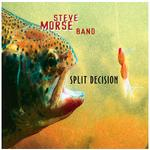

| Artist: | Steve Morse Band |
| Title: | Split Decision |
| Label: | Magna Carta MAX-9058-2 |
| Length(s): | 53 minutes |
| Year(s) of release: | 2002 |
| Month of review: | [04/2002] |
| 1) | Heightened Awareness | 4.19 |
| 2) | Busybodies | 2.34 |
| 3) | Marching Orders | 4.58 |
| 4) | Mechanical Frenzy | 4.26 |
| 5) | Great Mountain Spirits | 4.22 |
| 6) | Majorly Up | 3.54 |
| 7) | Gentle Flower, Hidden Beast | 5.37 |
| 8) | Moment's Comfort | 5.33 |
| 9) | Clear Memories | 3.21 |
| 10) | Midnight Daydream | 5.18 |
| 11) | Back Porch | 4.04 |
| 12) | Natural Flow | 4.42 |
After a quiet beginning with rolling drums, the music turns for the rocky later on Marching Orders. The music combines Scottish folk (I seemed to hear something akin to bagpipes) with a certain dissonance. After the guitar opens furiously on Mechanical Frenzy we get plenty of variation and a good groove on this one. This is one of those songs that made me decide to put a review here, giving the album also its progressive tinge.
So far, the music has been fresh and lively, quite complex and layered (for its kind mind you. This is still guitar dominated rock). After a relaxed and percussive beginning, Great Mountain Spirits, shows again that the music of the Steve Morse Band compares well to for instance the more jazzy Tonecenter release. This is mainly becuase Morse allows for more melody and has a strongly varied approach to the guitar work. In this track we also ghear some stereo effects with nylon strumming for a mellowish effect.
After the groovy Majorly Up and the smooth jazzrock of Gentle Flower, Hidden Beast with its hsapr guitar playing and Santana feel we come to a quieter second part of the album.
In Moment's Comfort for instance, the acoustic guitar dominates and we get music reminiscent of Mark Knopfler for instance. The song both has a sense of sadness and optimism in it, but is a tad long.
Clear Memories is a mellowish piece with acoustic guitar dominating again. On Midnight Daydream however the music is slow and moody turning for the atmospheric and ethereal later on.
Back Porch opens dreamily, but pacey and has an American ring to it. Later the music turns for the folky (but not very). In the closer Natural Flow I heard a bit of Oldfield's Moonlight Shadow popping up. Melodic, but maybe a bit too static.